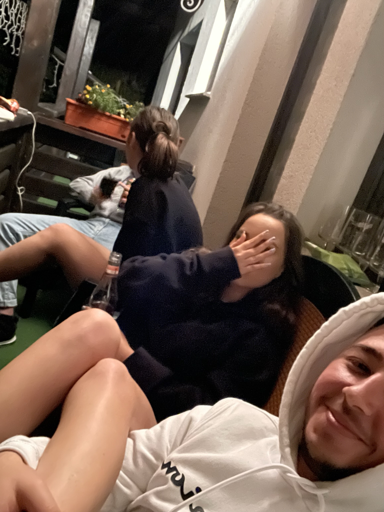
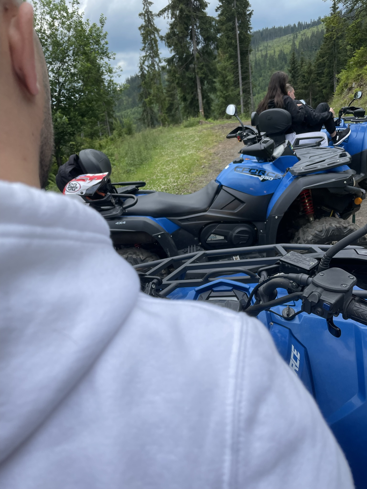

Holy Molly × The Motans
Neintenționat
Poate că unele lucruri nu dispar atunci când încercăm să le lăsăm în urmă. Doar învață să vorbească mai încet.
Ascultă piesa ↗În următoarele zile vei găsi aici câteva melodii și câteva gânduri pe care, poate, nu am știut să le spun atunci când trebuia.
Unele întrebări rămân cu noi.
Locurile păstrează uneori ceea ce noi nu mai știm să spunem.




Un loc, câteva zile și începutul unei colecții de amintiri.
Nu a fost încă scrisă.
Unele finaluri au nevoie de timp înainte să capete cuvinte.
Revino mâine.